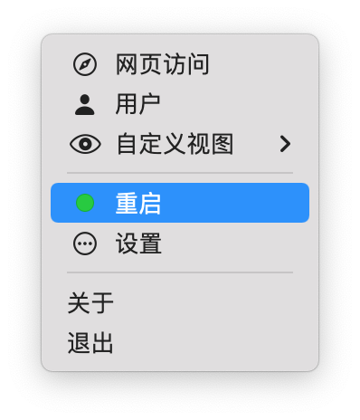

<br/>

<h4>下载"Lomorage照片助手":</h4>

<ul>
    <li>
        <h4><a href="https://gfw.lomorage.com/https://github.com/lomorage/LomoAgentOSX/releases/download/2023_02_20.12_46_05.0.d944bc7/LomoAgent.dmg">Intel</a></h4>
    </li>
    <li>
        <h4><a href="https://gfw.lomorage.com/https://github.com/lomorage/LomoAgentOSX/releases/download/2022_11_06.11_49_42.0.1e206ec/LomoAgent.dmg">M1</a></h4>
    </li>
</ul>

<br/>
<p>下载安装完后，启动应用，设置好存储目录，然后等待应用状态栏的状态成绿色。</p>

<br/>


